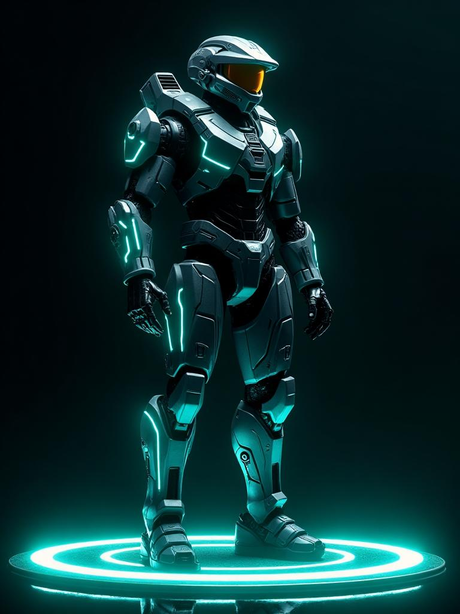

BenX V-2.0 brings full Hyprland desktop automation, complete hardware telemetry & power control, ultra-fast Groq Llama 3.3 multi-model intelligence, and a stunning GTK4 / Libadwaita glassmorphic UI with Tokyo-Night terminal parity.
git clone https://github.com/NateshKannaR/BenX-Assisto_V-2.0.git && ./setup_and_run.sh

From voice acoustic ingestion to Wayland IPC dispatch — follow the 5-stage sovereign architecture that powers BenX V-2.0.
Always-on, ultra-low latency listener and input interfaces
BenX continuously monitors for the wake word ('Hey BenX') using lightweight on-device detection. While speaking, a 30fps Cairo canvas responds with animated acoustic waveforms across GTK4, the floating 420x560 widget, or the Tokyo-Night terminal.
"Hey BenX" voice detection, Cairo waveform, or terminal hotkey.
Groq ultra-fast Llama 3.3 70B + Qwen3 & OpenRouter fallback.
CONFIRM_ACTIONS intercepts dangerous commands (shutdown, pacman).
hyprctl IPC, grim/slurp, cliphist, ydotool, and sysfs controls.
Libadwaita toasts, speech synthesis, and persistent layout logs.
Click any preset command chip or type your own instructions to see how BenX interprets intent, validates safety guardrails, and drives the Linux desktop.
Everything from low-level Wayland window geometry to systemd services, battery thresholds, OCR screen analysis, and multi-model fallbacks.
Move, resize, pin, float or tile windows. Seamlessly shift windows between workspaces or toggle special scratchpads (special:magic) via native hyprctl IPC.
Full governance over power profiles, scaling governors, Wi-Fi (nmcli), Bluetooth pairing, and audio routing. Low battery (<15%) triggers auto-powersaver.
Destructive operations like shutdown, reboot, pacman updates, process killing, or layout deletion are strictly gated by confirmation checks before execution.
Capture fullscreen, active window, or selected regions via grim and slurp. Record screens with wf-recorder and manage clipboard with cliphist.
Instant on-screen text extraction with Tesseract OCR engine, paired with vision-language models (Llama 4 Scout) to understand app layouts, terminal errors, or browser contents.
Ultra-fast inference on Groq LPUs with Llama 3.3 70B, Qwen3-32B, and Compound models. Automatically degrades gracefully to OpenRouter or local fallbacks on disconnect.
Whether you want a native Wayland glassmorphic desktop app, a Tokyo-Night terminal UI, or remote control from your phone — BenX has you covered.
Native Wayland client with Adw.ToastOverlay, floating notification pill, 420x560 pinned floating widget, and dynamic 30fps Cairo waveform animations.
Complete feature parity directly in your terminal. Designed for tiling window manager enthusiasts with sleek Tokyo-Night color palettes.
Cross-device synergy. Control your Arch Linux machine remotely from Android with bidirectional MongoDB state sync and shared chat history.

Filter through hundreds of natural language actions supported out-of-the-box by BenX V-2.0.
Instantly changes active workspace on current monitor.
Transfers focused window to specified workspace.
Switches focused window between tiled and floating mode.
Saves all window geometries into ~/.benx/layouts/work.json.
Restores saved window layout and workspaces across displays.
Opens or hides the scratchpad special workspace.
Scales CPU governor down for extended battery operation.
Reports percentage, discharge rate, time remaining, and battery health.
Scans 2.4/5GHz access points and lists signal strengths.
Enumerates paired headphones, keyboards, and battery levels.
Safely restarts user/system services with confirmation guards.
Checks Arch Linux official and AUR packages pending upgrade.
Interactive bounding box selection copied to clipboard & disk.
Records Wayland video with audio exclusion rules active.
Fuzzy searches clipboard buffer history for match.
Activates hyprlock PAM authentication with blurred backdrop.
Extracts text and diagnoses issues or errors visible on display.
Inspects code repository structure, dependencies, and git status.
Choose your distribution below. BenX is tested on Arch Linux, Hyprland, Ubuntu, and Fedora.
sudo pacman -S gtk4 libadwaita grim slurp cliphist wl-clipboard ydotool networkmanager python
git clone https://github.com/NateshKannaR/BenX-Assisto_V-2.0.git && cd BenX-Assisto_V-2.0 && ./setup_and_run.sh
echo 'export GROQ_API_KEY="gsk_your_groq_key_here"' >> ~/.bashrc && source ~/.bashrc
python benx.py (GTK4) or python benx_tui.py (TUI).